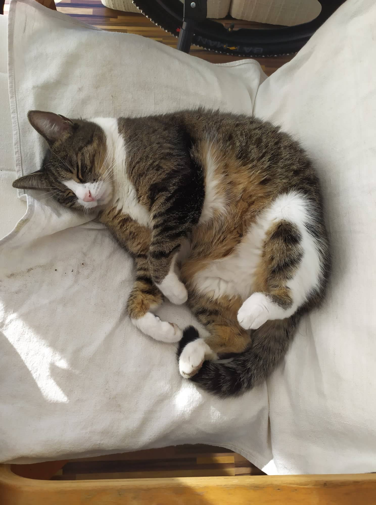

Horváth Barnabás
Rövid bemutatkozás
Budapesten születtem, illetve gyerekkorom első szakaszában ott is laktam szüleimmel, és két testvéremmel egy gazdagréti lakásban. Azonban kis családunknak ez az élettér az idő elteltével kicsinek bizonyult, így ahogy nagyobbak lettünk, szüleim a költözés mellett döntöttek. Körülbelül nyolc éves lehettem, amikor kis családunk Budaörsre költözött egy jóval tágasabb, kertes társasházba nagyszüleimmel együtt, ahol azóta is élünk. Gyerekkoromtól kezdve a labdarúgást szerettem a legjobban, ami azóta része az életemnek. Rengeteget gyakoroltam a kertben, hogy fejlesszem a technikámat, akár órák hosszát képes voltam kint focizni egyedül. Szüleim tizenegy éves koromban beirattak a budaörsi csapatba, ahol rengeteg élményt, sikert és tapasztalatot gyűjtöttem. Másik kedvenc időtöltésem a számítógépes játék volt, hiszen amikor csak tehettük bátyámmal a gép előtt voltunk és játszottunk. Ezek közül is a kedvencünk a League of Legends lett.
Tanulmányaim
Tanulmányaimat a Gazdagréti Törökugratóban kezdtem meg, ahol jó tanáraimnak és a szülői támogatásnak köszönhetően ötös tanuló voltam, illetve remek felkészítést kaptam a felvételire. Jó eredményeimnek köszönhetően bejutottam a budaörsi Illyésbe, ahol egy király közösség része lehettem, rengeteg emlékkel gazdagodtam. Az ekkor kötött barátságok jó része a mai napig tart, amiért nagyon hálás vagyok. Nagyon hálás vagyok Istennek azért is, hogy az érettségim ilyen jól sikerült, illetve hogy végül egy országos sporteredmény is összejött, így bejuthattam a Corvinus gazdinfó szakára
Kedvenc kajáim
- Medium Rare Beef Steak burgonyával
- Egy jó pörkölt nokedlivel
- Lazac steak
Kedvenc filmjeim
- Tais-toi!
- Gladiátor
- Sokkal több, mint testőr
egyszem macsekunk, Bodza
